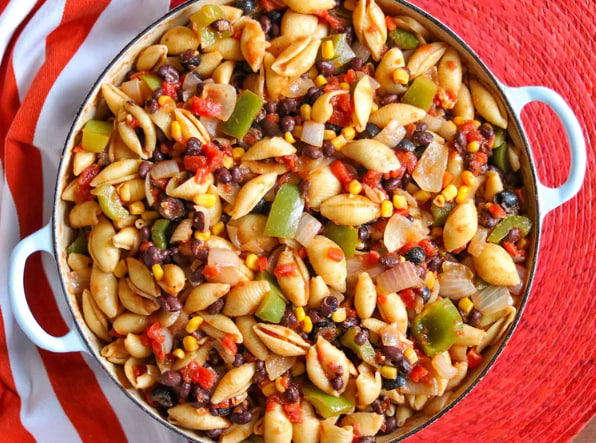

Mexican pasta is a great vegetarian dish with a kick!
Ingredients
Directions
Step 1
Bring a large pot of lightly salted water to a boil. Add pasta and cook for 8 to 10 minutes or until al dente; drain.
Step 2
While pasta is cooking, heat olive oil over medium heat in a large skillet. Cook onions and bell pepper in oil until lightly browned, about 10 minutes.
Step 3
Stir in corn and heat through. Stir in black beans, tomatoes, salsa, olives, seasoning mix, and salt and pepper and cook until thoroughly heated, about 5 minutes.
Step 4
Toss sauce with cooked pasta and serve.